A great wrestling match is like compelling theater. There are great characters, epic moments and an interesting story to tell.
The art of professional wrestling is a unique and entertaining form of combat sports entertainment.
It combines scripted storylines, choreographed moves, and charismatic characters to captivate audiences.
Wrestlers must master the art of storytelling through their in-ring actions and promos to connect with fans.
The physicality and athleticism displayed in the ring are a testament to the dedication and training required in this art form.
Pro wrestling continues to evolve, blending athleticism, drama, and spectacle to create a one-of-a-kind entertainment experience for fans worldwide.So Lets Start!
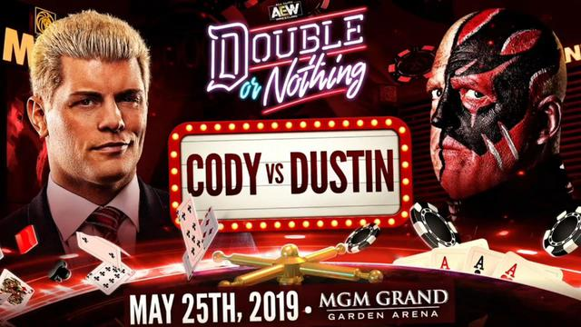 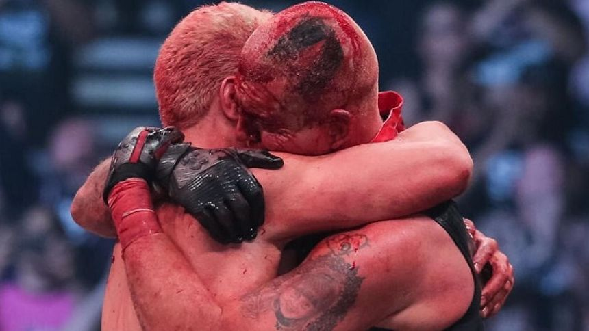
AEW's very first ever show, Double or Nothing 2019, played host to what is still one of the greatest matches in AEW history.
Cody Rhodes and Dustin Rhodes clashed in a personal match between brothers, and it delivered in every way.
It was a throwback, slower and methodical style of match but it worked perfectly.
Blood-drenched, these two went to war in a match which stole the show and legitimized AEW as a company who deliver spectacle after spectacle in the ring.
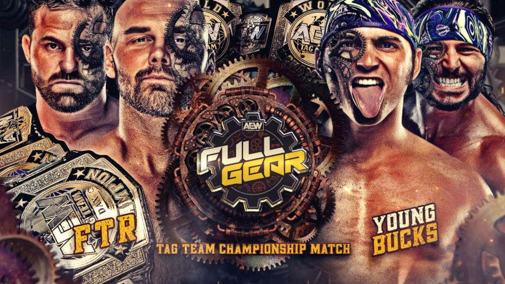 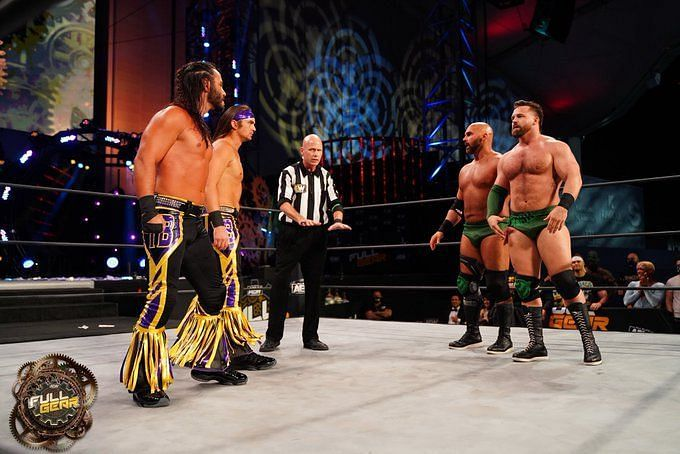
This match was a love letter to tag team wrestling.
A member of each team injured themselves forcing them to work the other teams style, with Matt injuring his ankle and Dax injuring his hand.
So this made the high flying team has a guy with an injured leg and the hard hitting team has a guy with an injured hand.
This caused The Bucks to win but still keep FTR strong and set up a possible rematch
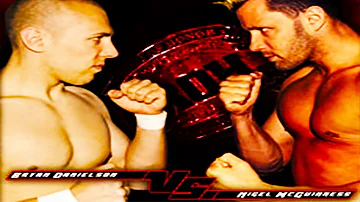 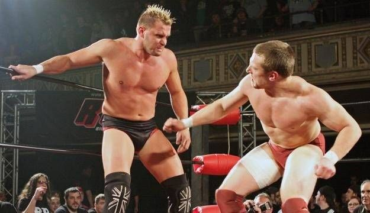
A thrilling war between two of ROH's best. The atmosphere and physicality of this match were on par with their all-time classic in Liverpool the year before. Both men brought their excellent mat-wrestling and submissions initially,
but I absolutely loved how quickly things broke down into a slugfest out on the floor where Nigel had the distinct advantage until that sick suplex from Dragon onto the guard railing.
The match really entered another level after that point, with Dragon viciously targeting Nigel's back and just laying in some mean strikes. Nigel brought tremendous babyface fire here,
landing his explosive lariats and offense while fighting through the pain in his back.The finishing stretch was breathtaking, but in the end, Bryan's ferocity proved to be too much for Nigel,
as he bloodied himself with some sick headbutts before finally locking in Cattle Mutilation.Easily one of the best matches in ROH history.
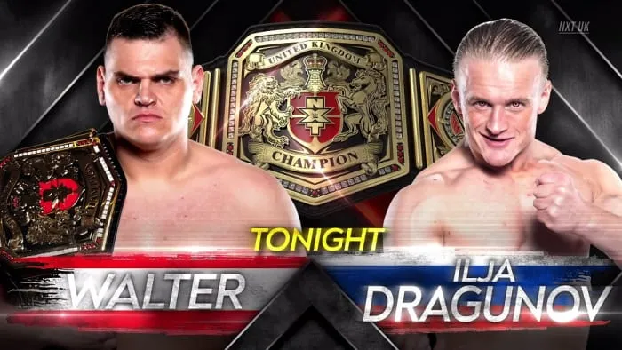 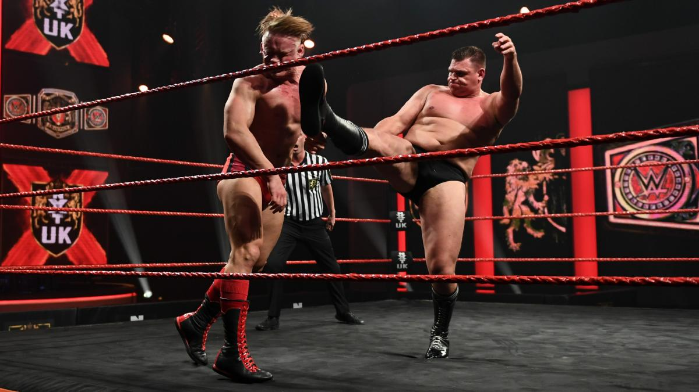
A spectacle of depraved violence and brutality. Not much to add beyond what has already been said so many times, but beyond anything this match just appears *real*. Like for just a moment the make-believe world of professional wrestling was simply laid by the wayside and it's simply two warriors trying to beat each other into a pulp.
Ilja is fantastic in his fighting spirit (for this is a match expressly harkening back to 80s/90s All Japan) and truly embodies the 'unbesiegebar' moniker.
At the end of the match you're just left to stare at rubble in the wake of the mayhem and left wondering in awe at what you just witnessed. One of the greatest matches of all time
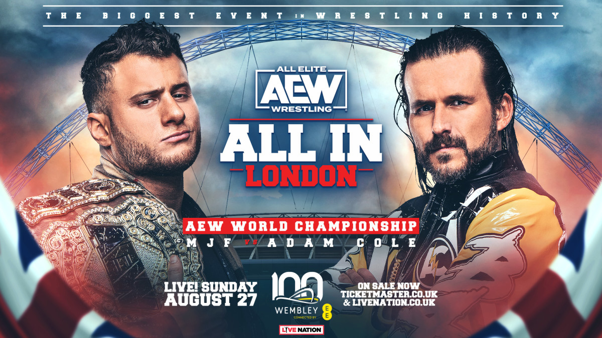 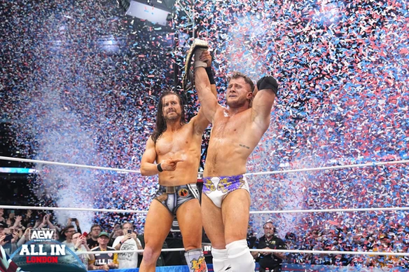
This was amazing, 40 minutes of incredible storytelling and in-ring action. Both men delivered incredible perfomances, Mjf took some awful bumps and Cole showed all his talent when it came to show a moral conflict, whetver or not to cheat and screw his best friend.
Plenty of great sequences and exchanges with a very emotional closing strech that had on the edge of my seat.Peak storytelling as well with lots of callbacks and moments that had me on the verge of tears, especially in the post-match.
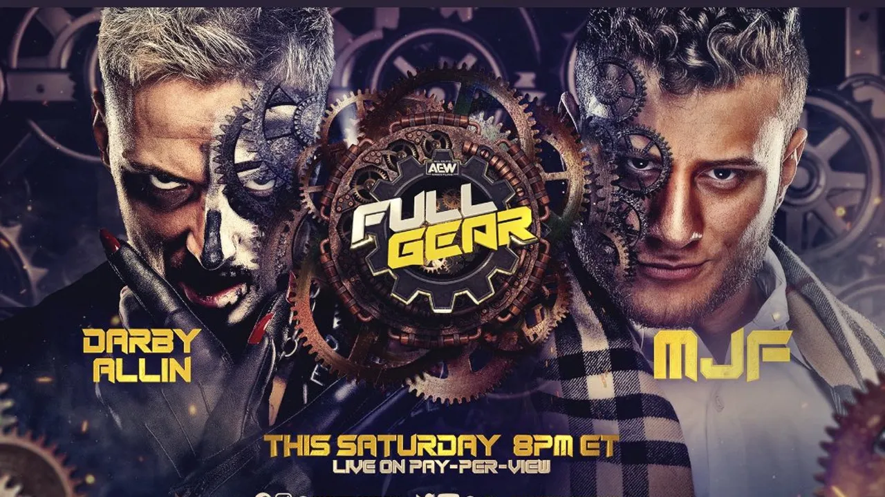 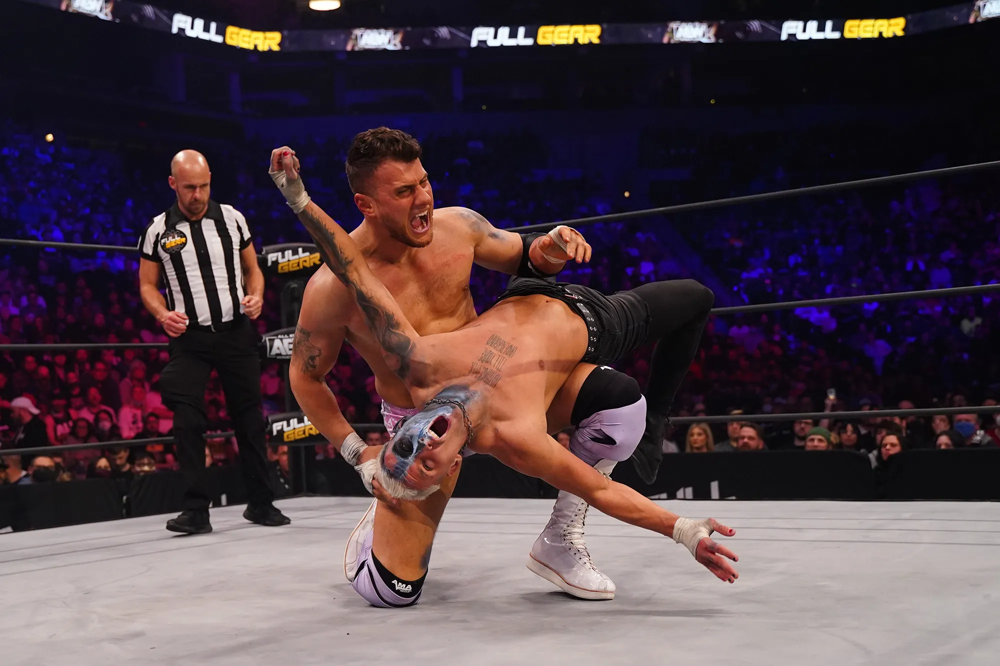
In an era where modern wrestling has mainly become spotfests, moves from everywhere, nearfalls, MJF and Darby Allin embark us here on a totally old-school match mixed with the codes of what makes wrestling successful today,
They mixed together fluid wrestling, hard-hitting spots, and a storyline thread through the match that was done perfectly. It is often hard to claim this but there were arguably no flaws in this beautifully executed bout between two of AEW's Pillars.
And that's how we got one of the best matches in the history of All Elite Wrestling
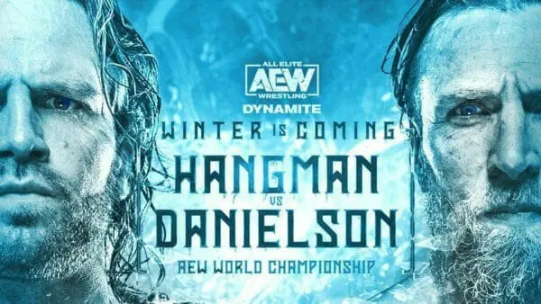 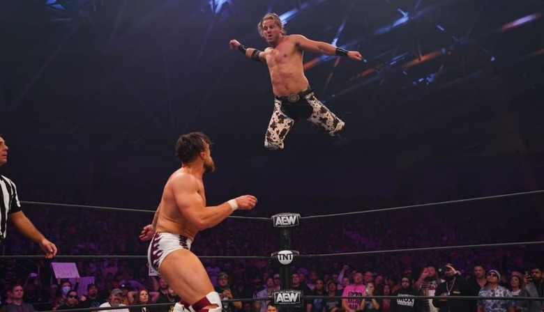
This is a perfect example of how pro wrestling should be done, a perfect example how great pro wrestling is. This match was everything wrestling is about: in-ring psycology, selling, counters, omg moments, blood, sacrifice, this match had everything.
It was just special.Page and Danielson delivered amazing perfomances and everytime I watch this epic battle I remember why I love pro wrestling.
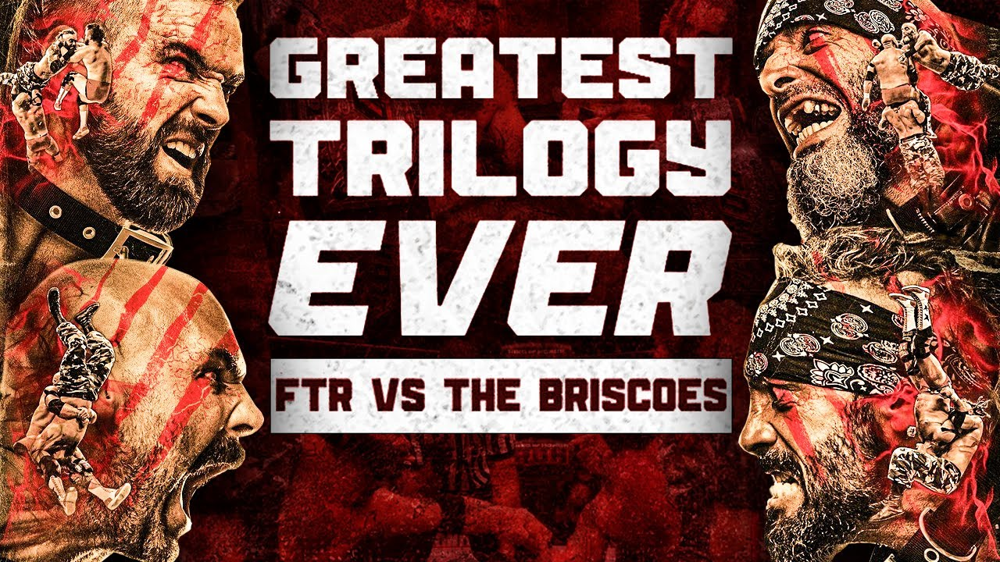
FTR vs The Briscoes battled at three consecutive Ring of Honor pay per views, in three distinct matches as they swapped the Ring of Honor World Tag Team Championships between themselves.
1. FTR vs The Briscoes - Supecard Of Honor XV
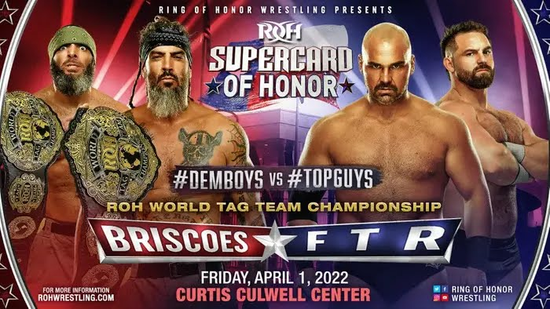 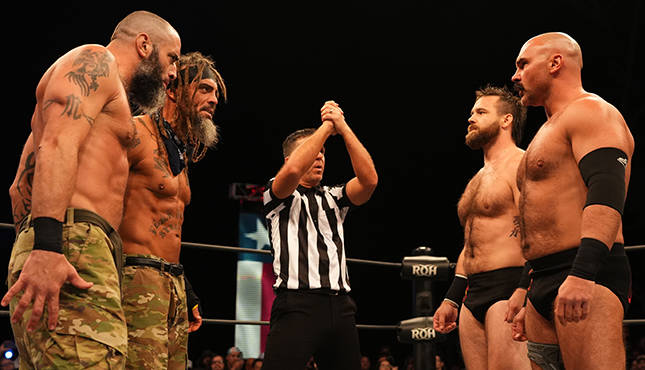
2. FTR vs The Briscoes (Two Out Of Three Falls Match) - Death Before Dishonor 2022
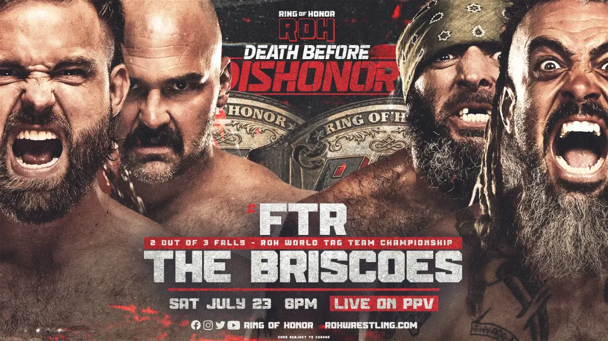 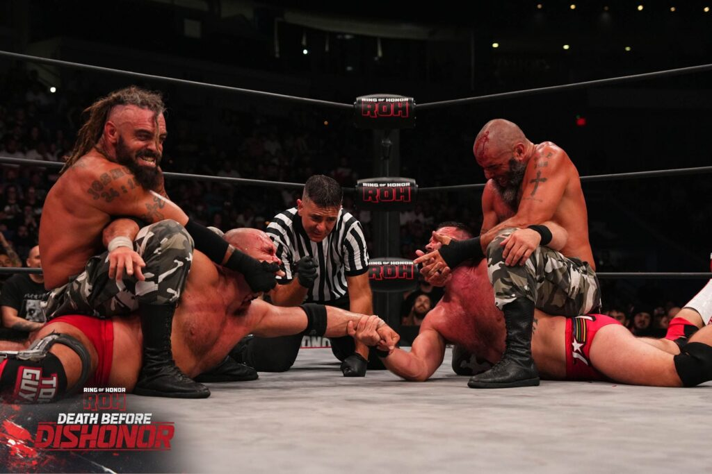
3. FTR vs The Briscoes (Double Dog Collar Match)- Final Battle 2022
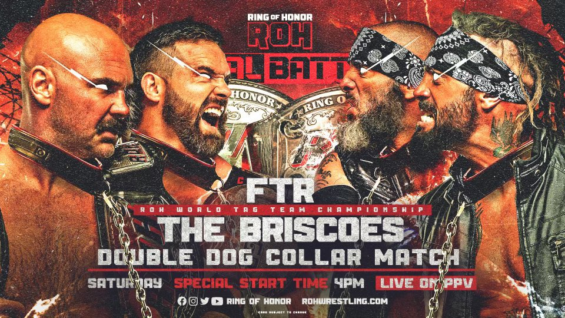 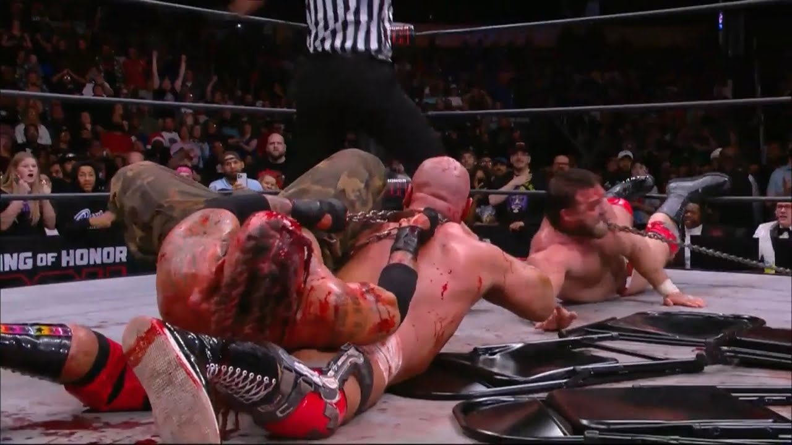
Many people are calling these the greatest tag matches in modern times and possibly ever.
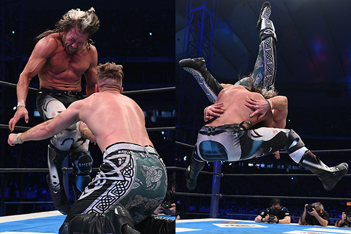 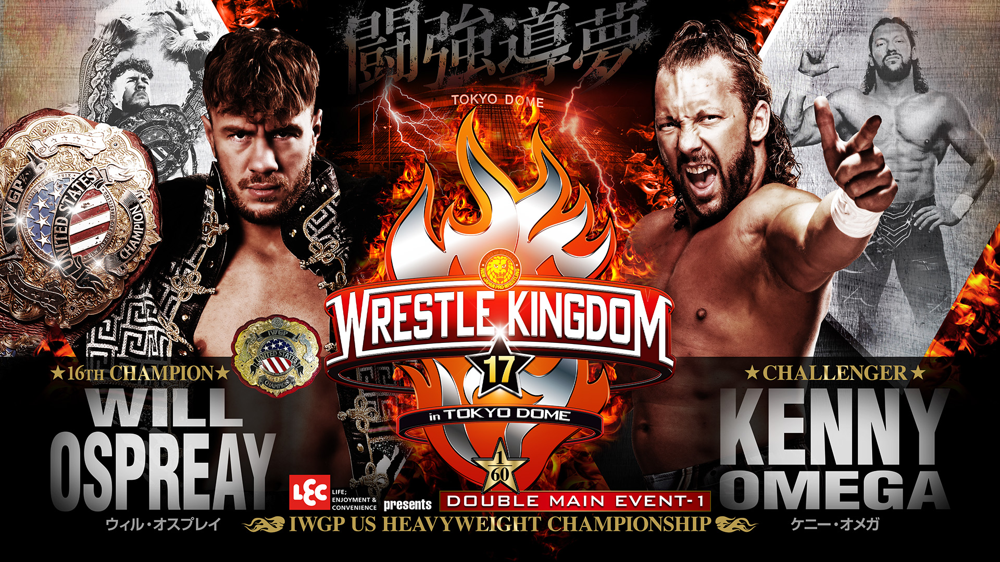 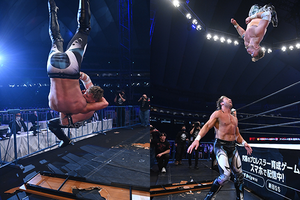
This match, and others similar to it (e.g. the Omega-Okada quadrilogy) is what I believe all other professional wrestling matches should aspire to emulate.
There are no wasted movements here, no pointless and dull grappling, and the moves are executed to perfection. Moreover, the match communicated the story perfectly,
with Omega gradually coming to dominate the spirited, but clearly outmatched Ospreay.
I believe any person could watch this and derive a basic understanding of the story being told here. There were of course many exciting moments and sequences, including a gnarly DDT into the turnbuckle. Personally,
my favourite was Omega smashing Ospreay's head through the already broken table. Overall, this match is a perfect mixture of athleticism, spectacular spots, and an expertly communicated story.
Although the match is over half-an-hour long, it only left me wanting more
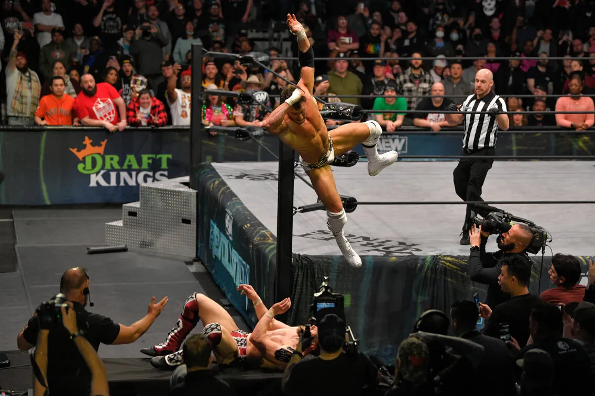 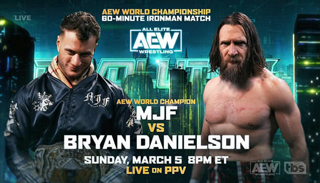 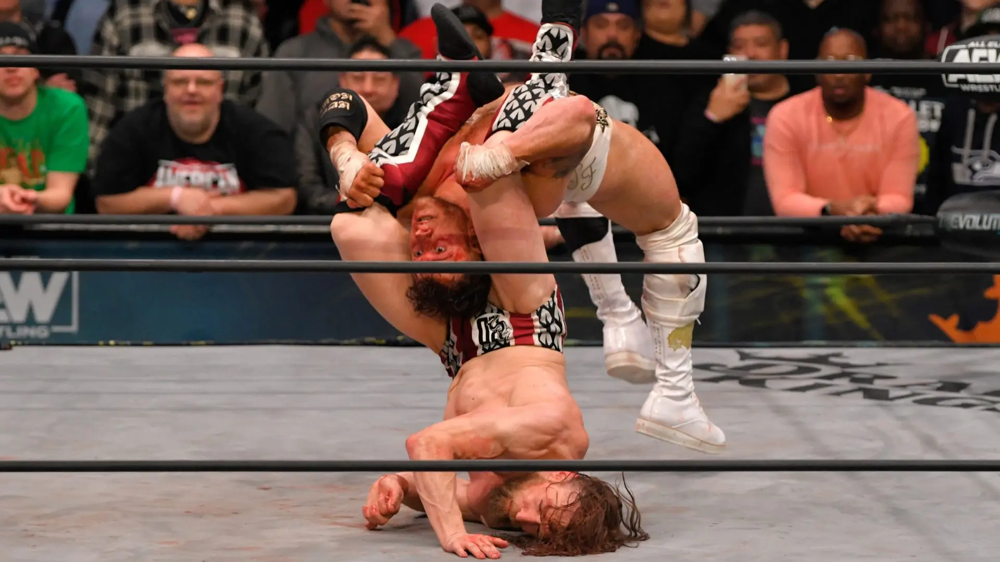
The pinnacle of professional wrestling. Perfect, just like the match the first match with Hangman and probably a bit better. Everything was perfect: selling, spots, counters, kickouts. Everything!
I don't know what to say... The only nitpick could be that it's slow in the beginning but after 15/20 minutes everything is perfect and even what we saw in those 20 minutes was still great wrestling.
Roll-up combinations, diving elbow drop on the table, tombstone after tombstone and busaiku knee after busaiku knee.
MJF crying and Danielson laughing is a great poetic imagery. Struggle, blood, sweat, tears and pure glorious pro wrestling.
Also a fantastic thing is that they end the match on 4-3 for MJF and an iron-man match with many pinfalls is great. Danielson is the best wrestler of all time and goated babyface while MJF is the best wrestler in the world right now and a goated heel.
This match is classic that will be remembered for the ages.